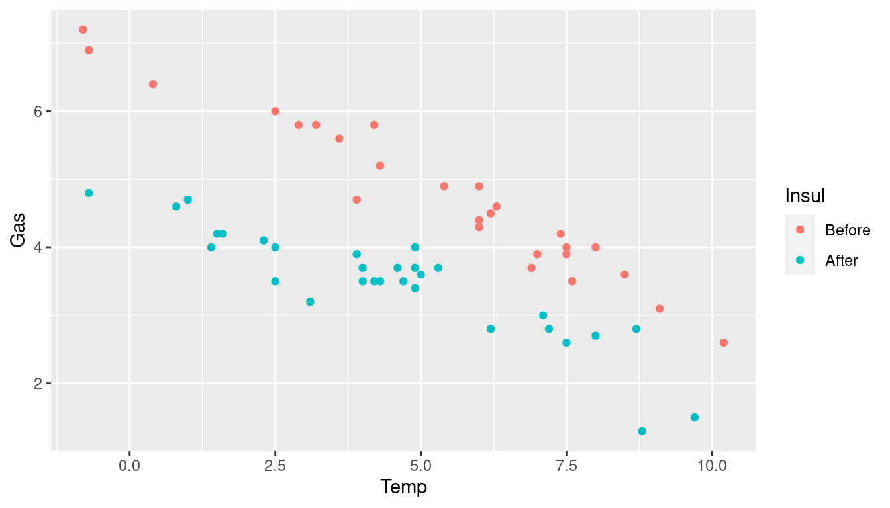
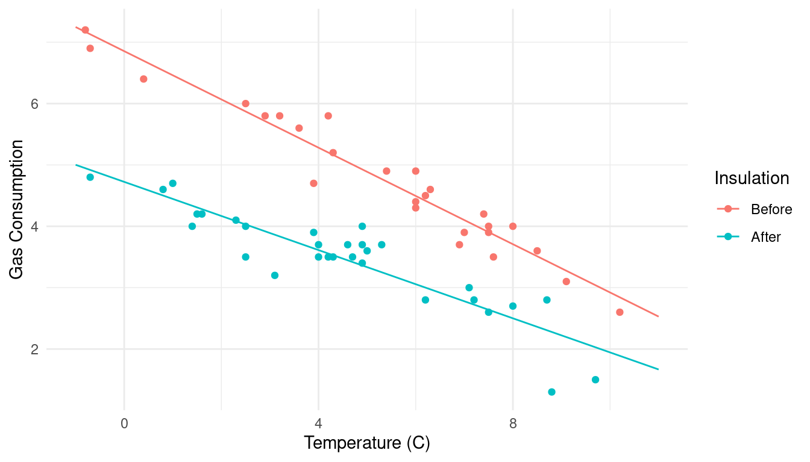
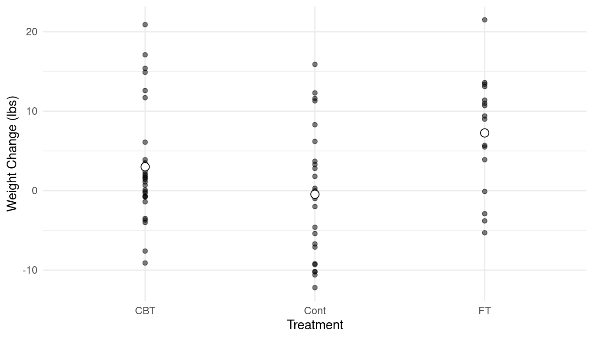
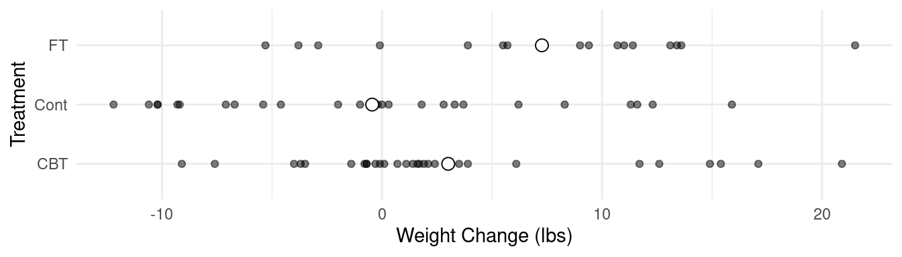

Monday, Jan 23
You can also download a PDF copy of this lecture.
Using the contrast Function
Frequently a quantity of interest has the form \[
E(Y_a) - E(Y_b),
\] where \(E(Y_a)\) and \(E(Y_b)\) represent the expected value of
the response variable under circumstances \(a\) and \(b\), respectively. By “circumstances” we
mean when explanatory variable(s) assume(s) specific values. This is
sometimes called a “contrast” and inferences concerning a contrast can
be made using the contrast function from the
trtools package.1 For linear models, any contrast can be
expressed as a linear function of the model parameters, and so
contrast can be used instead of lincon if
desired.
Example: Consider a linear model for the
anorexia data.
library(MASS) # for anorexia data frame
anorexia$change <- anorexia$Postwt - anorexia$Prewt # compute weight change
head(anorexia) # inspect "head" of anorexia data frame Treat Prewt Postwt change
1 Cont 80.7 80.2 -0.5
2 Cont 89.4 80.1 -9.3
3 Cont 91.8 86.4 -5.4
4 Cont 74.0 86.3 12.3
5 Cont 78.1 76.1 -2.0
6 Cont 88.3 78.1 -10.2summary(anorexia) # summary of variables in anorexia data frame Treat Prewt Postwt change
CBT :29 Min. :70.0 Min. : 71.3 Min. :-12.20
Cont:26 1st Qu.:79.6 1st Qu.: 79.3 1st Qu.: -2.23
FT :17 Median :82.3 Median : 84.0 Median : 1.65
Mean :82.4 Mean : 85.2 Mean : 2.76
3rd Qu.:86.0 3rd Qu.: 91.5 3rd Qu.: 9.10
Max. :94.9 Max. :103.6 Max. : 21.50 str(anorexia) # structure of anorexia data frame'data.frame': 72 obs. of 4 variables:
$ Treat : Factor w/ 3 levels "CBT","Cont","FT": 2 2 2 2 2 2 2 2 2 2 ...
$ Prewt : num 80.7 89.4 91.8 74 78.1 88.3 87.3 75.1 80.6 78.4 ...
$ Postwt: num 80.2 80.1 86.4 86.3 76.1 78.1 75.1 86.7 73.5 84.6 ...
$ change: num -0.5 -9.3 -5.4 12.3 -2 ...m <- lm(change ~ Treat, data = anorexia)
summary(m)$coefficients Estimate Std. Error t value Pr(>|t|)
(Intercept) 3.007 1.398 2.151 0.03499
TreatCont -3.457 2.033 -1.700 0.09361
TreatFT 4.258 2.300 1.852 0.06838We can see that the model is \[
E(Y_i) =
\begin{cases}
\beta_0, & \text{if the treatment for the $i$-th observation is
cognitive-behavioral therapy}, \\
\beta_0 + \beta_1, & \text{if the treatment for the $i$-th
observation is control}, \\
\beta_0 + \beta_2, & \text{if the treatment for the $i$-th
observation is family therapy}.
\end{cases}
\] Suppose we want to make inferences about the difference in the
expected weight change between the cognitive-behavioral and control
conditions. We have that \[\begin{align*}
E(Y_a) & = \beta_0, \\
E(Y_b) & = \beta_0 + \beta_1,
\end{align*}\] and so this difference is \[
E(Y_a) - E(Y_b) = \beta_0 - (\beta_0 + \beta_1) = -\beta_1.
\] Inferences concerning \(-\beta_1\) can be made using
lincon since this is a linear function of the model
parameters: \[
\ell = 0 \times \beta_0 + (-1) \times \beta_1 + 0 \times \beta_2 =
-\beta_1.
\]
library(trtools) # loading for the lincon and contrast functions
lincon(m, a = c(0,-1,0)) estimate se lower upper tvalue df pvalue
(0,-1,0),0 3.457 2.033 -0.5994 7.513 1.7 69 0.09361Alternatively we can use the contrast function in which
we specify values of the explanatory variables rather than having work
out the coefficients of the linear function.
contrast(m, a = list(Treat = "CBT"), b = list(Treat = "Cont")) estimate se lower upper tvalue df pvalue
3.457 2.033 -0.5994 7.513 1.7 69 0.09361Note: The meaning of the a and
b arguments are different for the lincon and
contrast functions.
The contrast function can compute multiple contrasts at
a time. Suppose we want to estimate the difference in the expected
weight change between each of the two therapy conditions and the control
condition:
contrast(m, a = list(Treat = c("CBT","FT")), b = list(Treat = "Cont")) estimate se lower upper tvalue df pvalue
3.457 2.033 -0.5994 7.513 1.700 69 0.093608
7.715 2.348 3.0302 12.399 3.285 69 0.001602Note that contrast includes an optional
cnames (contrast names) argument to label the output for
clarity.
contrast(m,
a = list(Treat = c("CBT","FT")),
b = list(Treat = "Cont"),
cnames = c("CBT vs Control","FT vs Control")) estimate se lower upper tvalue df pvalue
CBT vs Control 3.457 2.033 -0.5994 7.513 1.700 69 0.093608
FT vs Control 7.715 2.348 3.0302 12.399 3.285 69 0.001602Warning: To avoid confusion, do not list multiple values of more than one explanatory variable. It is possible to specify multiple values of two or more explanatory variables, but the output can be confusing.
If we do not specify the b argument then
contrast will produce an estimate of just \(E(Y_a)\). For example, we can estimate the
expected weight change under each condition.
contrast(m, a = list(Treat = c("CBT","FT","Cont")),
cnames = c("Cognitive-Behavioral","Family","Control")) estimate se lower upper tvalue df pvalue
Cognitive-Behavioral 3.007 1.398 0.218 5.796 2.1509 69 0.0349920
Family 7.265 1.826 3.622 10.907 3.9787 69 0.0001688
Control -0.450 1.476 -3.395 2.495 -0.3048 69 0.7614470Example: Consider again a model for the
whiteside data.
m <- lm(Gas ~ Insul + Temp + Insul:Temp, data = whiteside)
summary(m)$coefficients Estimate Std. Error t value Pr(>|t|)
(Intercept) 6.8538 0.13596 50.409 7.997e-46
InsulAfter -2.1300 0.18009 -11.827 2.316e-16
Temp -0.3932 0.02249 -17.487 1.976e-23
InsulAfter:Temp 0.1153 0.03211 3.591 7.307e-04Recall that the model can be written as \[
E(G_i) =
\begin{cases}
\beta_0 + \beta_2t_i, & \text{if the $i$-th observation is
before insulation}, \\
\beta_0 + \beta_1 + (\beta_2 + \beta_3)t_i, & \text{if the
$i$-th observation is after insulation.}
\end{cases}
\] So the rate of change in expected gas consumption per unit
increase in temperature is \(\beta_2\)
before insulation and \(\beta_2 +
\beta_3\) after insulation. Inferences concerning both of these
quantities can be obtained using lincon.
lincon(m, a = c(0,0,1,0)) # b2 (note: also shown by summary above) estimate se lower upper tvalue df pvalue
(0,0,1,0),0 -0.3932 0.02249 -0.4384 -0.3481 -17.49 52 1.976e-23lincon(m, a = c(0,0,1,1)) # b2 + b3 estimate se lower upper tvalue df pvalue
(0,0,1,1),0 -0.2779 0.02292 -0.3239 -0.2319 -12.12 52 8.936e-17To use contrast to produce these inferences we consider
a one unit change temperature.
contrast(m,
a = list(Insul = "Before", Temp = 1),
b = list(Insul = "Before", Temp = 0)) estimate se lower upper tvalue df pvalue
-0.3932 0.02249 -0.4384 -0.3481 -17.49 52 1.976e-23contrast(m,
a = list(Insul = "After", Temp = 1),
b = list(Insul = "After", Temp = 0)) estimate se lower upper tvalue df pvalue
-0.2779 0.02292 -0.3239 -0.2319 -12.12 52 8.936e-17contrast(m,
a = list(Insul = c("Before","After"), Temp = 1),
b = list(Insul = c("Before","After"), Temp = 0),
cnames = c("before","after")) estimate se lower upper tvalue df pvalue
before -0.3932 0.02249 -0.4384 -0.3481 -17.49 52 1.976e-23
after -0.2779 0.02292 -0.3239 -0.2319 -12.12 52 8.936e-17Note that since the rate of change in expected gas consumption is constant, any two values of temperature one unit apart would produce the same result. For example:
contrast(m,
a = list(Insul = c("Before","After"), Temp = 3),
b = list(Insul = c("Before","After"), Temp = 2),
cnames = c("before","after")) estimate se lower upper tvalue df pvalue
before -0.3932 0.02249 -0.4384 -0.3481 -17.49 52 1.976e-23
after -0.2779 0.02292 -0.3239 -0.2319 -12.12 52 8.936e-17What is the change in expected gas consumption if temperature goes up by 10C?
contrast(m,
a = list(Insul = c("Before","After"), Temp = 12),
b = list(Insul = c("Before","After"), Temp = 2),
cnames = c("before","after")) estimate se lower upper tvalue df pvalue
before -3.932 0.2249 -4.384 -3.481 -17.49 52 1.976e-23
after -2.779 0.2292 -3.239 -2.319 -12.12 52 8.936e-17Expected gas consumption at 5C before and after insulation are \(\beta_0 + \beta_25\) and \(\beta_0 + \beta_1 + (\beta_2 + \beta_3)5\). Inferences concerning these quantities can be obtained as follows.
lincon(m, a = c(1,0,5,0)) # b0 + b2 x 5 estimate se lower upper tvalue df pvalue
(1,0,5,0),0 4.888 0.06383 4.76 5.016 76.57 52 3.885e-55lincon(m, a = c(1,1,5,5)) # b0 + b1 + (b2 + b3)5 estimate se lower upper tvalue df pvalue
(1,1,5,5),0 3.334 0.06024 3.213 3.455 55.35 52 6.772e-48contrast(m,
a = list(Insul = c("Before","After"), Temp = 5),
cnames = c("before @ 5C","after @ 5C")) estimate se lower upper tvalue df pvalue
before @ 5C 4.888 0.06383 4.760 5.016 76.57 52 3.885e-55
after @ 5C 3.334 0.06024 3.213 3.455 55.35 52 6.772e-48The difference in expected gas consumption between before and after insulation at 5C is \(\beta_1 + \beta_35\). Inferences concerning this quantity can be obtained as follows.
lincon(m, a = c(0,1,0,5)) estimate se lower upper tvalue df pvalue
(0,1,0,5),0 -1.553 0.08777 -1.73 -1.377 -17.7 52 1.155e-23contrast(m,
a = list(Insul = "After", Temp = 5),
b = list(Insul = "Before", Temp = 5)) estimate se lower upper tvalue df pvalue
-1.553 0.08777 -1.73 -1.377 -17.7 52 1.155e-23In many cases we can use either lincon or
contrast. The latter is often easier to use since it does
not require the user to work out the coefficients for the linear
function of model parameters. But there are cases where
lincon can do something that contrast
cannot.
Computing and Plotting Estimated Expected Responses
Recall that we can use contrast to compute estimated
expected responses at specified values of the explanatory variables.
contrast(m, a = list(Insul = c("Before","After"), Temp = -1),
cnames = c("before @ -1","after @ -1")) estimate se lower upper tvalue df pvalue
before @ -1 7.247 0.1562 6.934 7.561 46.39 52 5.473e-44
after @ -1 5.002 0.1384 4.724 5.280 36.13 52 1.640e-38But to create several estimates of the expected response it is more
convenient to use the predict function (so-called because
an estimate of \(E(Y)\) can be also be
viewed as a prediction of the value of \(Y\)). First let’s create a data frame where
we’d like to obtain estimates of the expected response.
d <- expand.grid(Insul = c("Before","After"), Temp = seq(-1, 11, by = 1))
head(d) Insul Temp
1 Before -1
2 After -1
3 Before 0
4 After 0
5 Before 1
6 After 1tail(d) Insul Temp
21 Before 9
22 After 9
23 Before 10
24 After 10
25 Before 11
26 After 11There are a couple of things to note here: the
expand.grid function creates a data frame for all
combinations of the values of the variables, and seq
creates a sequence of values. For example,
seq(-1, 11, by = 2) # sequence from -1 to 11 by increments of two[1] -1 1 3 5 7 9 11seq(-1, 11, length = 5) # sequence from -1 to 11 of five values[1] -1 2 5 8 11The predict function can be used to compute the
estimated expected response for each pseudo-observation.
d$ey <- predict(m, newdata = d)
head(d) Insul Temp ey
1 Before -1 7.247
2 After -1 5.002
3 Before 0 6.854
4 After 0 4.724
5 Before 1 6.461
6 After 1 4.446Now let’s see if we can show expected gas consumption as a function of insulation and temperature. First we will plot the data.
library(ggplot2)
p <- ggplot(whiteside, aes(x = Temp, y = Gas, color = Insul)) + geom_point()
plot(p) Let’s change the aesthetic labels and the theme.
p <- ggplot(whiteside, aes(x = Temp, y = Gas, color = Insul)) + geom_point() +
labs(x = "Temperature (C)", y = "Gas Consumption", color = "Insulation") +
theme_minimal()
plot(p) Now we can add lines to represent expected gas consumption as a function
of temperature and insulation. Note that we need to change the
Now we can add lines to represent expected gas consumption as a function
of temperature and insulation. Note that we need to change the
y variable and the data frame for this part.
p <- ggplot(whiteside, aes(x = Temp, y = Gas, color = Insul)) + geom_point() +
labs(x = "Temperature (C)", y = "Gas Consumption", color = "Insulation") +
theme_minimal() + geom_line(aes(y = ey), data = d)
plot(p) Note that you can do this in pieces, which might be easier to debug.
p <- ggplot(whiteside, aes(x = Temp, y = Gas, color = Insul)) + geom_point() +
labs(x = "Temperature (C)", y = "Gas Consumption", color = "Insulation") +
theme_minimal()
plot(p)
p <- p + geom_line(aes(y = ey), data = d)
plot(p) Now consider the
Now consider the anorexia data and model from earlier.
m <- lm(change ~ Treat, data = anorexia)
contrast(m, a = list(Treat = c("CBT","FT","Cont")),
cnames = c("Cognitive-Behavioral","Family","Control")) estimate se lower upper tvalue df pvalue
Cognitive-Behavioral 3.007 1.398 0.218 5.796 2.1509 69 0.0349920
Family 7.265 1.826 3.622 10.907 3.9787 69 0.0001688
Control -0.450 1.476 -3.395 2.495 -0.3048 69 0.7614470d <- data.frame(Treat = c("CBT","FT","Cont"))
d$yhat <- predict(m, newdata = d)
d Treat yhat
1 CBT 3.007
2 FT 7.265
3 Cont -0.450Note: We can use data.frame to create a
data frame for generating estimated expected responses when there is
just one explanatory variable. But if we want to create a data frame
with various combinations of values of two or more explanatory variables
it is easier to use expand.grid.
Here is a plot of the raw data.
p <- ggplot(anorexia, aes(x = Treat, y = change)) + theme_minimal() +
geom_point(alpha = 0.5) + labs(x = "Treatment", y = "Weight Change (lbs)")
plot(p)
Note the use of alpha = 0.5 to control the transparency of
the points. Now we can add the estimated expected responses.
p <- p + geom_point(aes(y = yhat), data = d, shape = 21, size = 3, fill = "white")
plot(p) Hint: Try a Google image search for “R point shapes” to know what number to use. Shape numbers 21-25 let you separately specify the colors of the point fill and outline. For other aesthetics (e.g., size) you sometimes just have to experiment.
Maybe that would look better sideways?
p <- p + coord_flip()
plot(p)
The
contrastfunction in the trtools package is modeled after functions of the same name in the contrast and rms packages. Mine has some features not found in those functions, but I did not incorporate all of the features in those functions either. You will also learn how to use functions from the emmeans package which have some functionality like that ofcontrastfrom the trtools package.↩︎